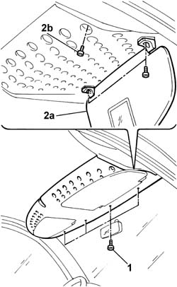

7040H08 oddment shelf on roof trim r r
- Path
- Procedures > 70 FITTINGS > 7040 BODYSHELL INTERIOR TRIMS AND FITTINGS > 7040H roof panel lining > 7040H08 oddment shelf on roof trim r r
- Kind
- repair procedure (removal / refitting; the operation number is the code)
- Applies to
- all engines; all production periods
- Interactive page
- https://sloeber94.github.io/elrnDB-fDbl/en/#/2585144
Applies to: all engines; all production periods
 Removing
Removing
 Refitting
RefittingDisconnect the battery negative terminal.
Op. 7040E50 FRONT MODULAR COURTESY LIGHT UNIT - R+R
1. Undo the front fixing bolts.
2. Open the sun blinds (2a) and undo the fixing bolts (2b), driver's side and passenger side.

Applies to: all engines; all production periods
Remove the cover.
Applies to: all engines; all production periods
Refitting
RemovingFit the trim and secure it using the bolts.
Op. 7040E50 FRONT MODULAR COURTESY LIGHT UNIT - R+R
Connect the battery negative terminal.